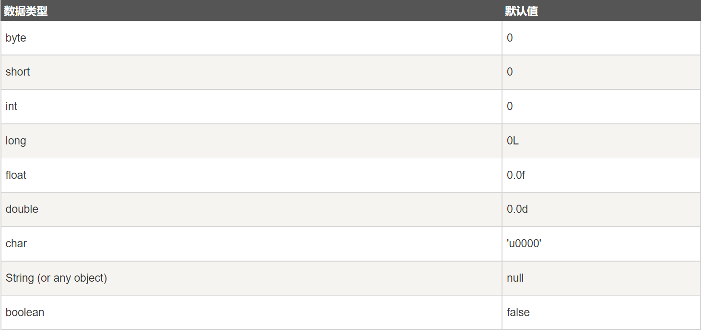

# Java 学习以及面向对象初步
# 一。类和对象
# 1. 定义
对象：对象是类的一个实例，有状态和行为，例如一条狗是一个对象，它的状态有：颜色，名字，品种；行 为有：摇尾巴，叫，吃等
类： 类是一个模板，它描述一类对象的行为和状态
public class Dog { | |
String breed; | |
int size; | |
String colour; | |
int age; | |
void eat() { | |
} | |
void run() { | |
} | |
void sleep(){ | |
} | |
void name(){ | |
} | |
} |
一个类可以包含一下类型变量：
- 局部变量：在方法、构造方法或者语句块中定义的变量被称为局部变量。变量声明和初始化都是在方法 中，方法结束后，变量就会自动销毁。
- 成员变量：成员变量是定义在类中，方法体之外的变量。这种变量在创建对象的时候实例化。成员变量可 以被类中方法、构造方法和特定类的语句块访问。
- 类变量：类变量也声明在类中，方法体之外，但必须声明为 static 类型。
# 2. 构造方法
每个类都有构造方法。如果没有显式地为类定义构造方法，Java 编译器将会为该类提供一个默认构造方法。
在创建一个对象的时候，至少要调用一个构造方法。构造方法的名称必须与类同名，一个类可以有多个构造方法。
下面是一个构造方法示例：
public class Puppy{ | |
public Puppy(){ | |
} | |
public Puppy(String name){ | |
// 这个构造器仅有一个参数：name | |
} | |
} |
# 3. 创建对象
对象是根据类创建的。在 Java 中，使用关键字 new 来创建一个新的对象。创建对象需要以下三步：
声明：声明一个对象，包括对象名称和对象类型。
实例化：使用关键字 new 来创建一个对象。
初始化：使用 new 创建对象时，会调用构造方法初始化对象。
public class Puppy{
public Puppy(String name){
// 这个构造器仅有一个参数：nameSystem.out.println("小狗的名字是 : " + name );
}public static void main(String[] args){
// 下面的语句将创建一个 Puppy 对象Puppy myPuppy = new Puppy( "tommy" );
}}// 小狗的名字是: tommy
# 4. 访问实例变量与方法
/* 实例化对象 */ | |
Object referenceVariable = new Constructor(); | |
/* 访问类中的变量 */ | |
referenceVariable.variableName; | |
/* 访问类中的方法 */ | |
referenceVariable.methodName(); |
# 5. 源文件声明规则
- 一个源文件中只能有一个 public 类
- 一个源文件可以有多个非 public 类
- 源文件的名称应该和 public 类的类名保持一致。例如：源文件中 public 类的类名是 Employee，那么源文件应该命名为 Employee.java。
- 如果一个类定义在某个包中，那么 package 语句应该在源文件的首行。
- 如果源文件包含 import 语句，那么应该放在 package 语句和类定义之间。如果没有 package 语句，那么 import 语句应该在源文件中最前面。
- import 语句和 package 语句对源文件中定义的所有类都有效。在同一源文件中，不能给不同的类不同的包声明。
除了上面提到的几种类型，Java 还有一些特殊的类，如：内部类、匿名类。
# 二。基本数据类型

# 自动类型转换
低 ------------------------------------> 高
byte,short,char—> int —> long—> float —> double
数据类型转换必须满足如下规则
- 不能对 boolean 类型进行类型转换。
- 不能把对象类型转换成不相关类的对象。
- 在把容量大的类型转换为容量小的类型时必须使用强制类型转换。
- 转换过程中可能导致溢出或损失精度
# 三。继承
# 什么是继承？
多个类中存在相同属性和行为时，将这些内容抽取到单独一个类中，那么多个类无需再定义这些属性和行为，只要继承那个类即可。
多个类可以称为子类，单独这个类称为父类、超类或者基类。
子类可以直接访问父类中的非私有的属性和行为。
通过 extends 关键字让类与类之间产生继承关系。
class SubDemo extends Demo{} //SubDemo是子类，Demo是父类
# 继承有什么好处？
- 提高代码的复用性。
- 让类与类之间产生了关系，是多态的前提。
# 继承的特点
1.Java 只支持单继承，不支持多继承。
// 一个类只能有一个父类，不可以有多个父类。 | |
class SubDemo extends Demo{} //ok | |
class SubDemo extends Demo1,Demo2...//error |
2.Java 支持多层（重）继承 (继承体系)。
class A{} | |
class B extends A{} | |
class C extends B{} |
# 使用继承时的注意事项
- 如果类之间存在着：is a 的关系，就可以考虑使用继承。
- 不要为了继承部分功能，而去使用继承。
# super 和 this 有什么区别？
*super* 是一个关键字，代表父类的存储空间标识。(可以理解为父亲的引用)
super 和 this 的用法相似。
this 代表对象的引用 (谁调用就代表谁)；
super 代表当前子类对父类的引用。
使用场景
- 当子父类出现同名成员时，可以用 super 进行区分；
- 子类要调用父类构造函数时，可以使用 super 语句。
区别
1. 成员变量
this.变量 -- 本类的 | |
super.变量 -- 父类的 |
2. 构造方法
this(...) -- 本类的 | |
super(...) -- 父类的 |
3. 成员方法
this.方法名() -- 本类的 | |
super.方法名() -- 父类的 |
super (); 和 this (); 都是在构造函数的第一行，不能同时出现。
# 方法的重写（覆盖）
子类中出现与父类一模一样的方法时（除了权限修饰符，权限修饰符大于等于不包括 private，返回值类型，方法名和参数列表相同），会出现覆盖操作，也称为重写或者复写。
父类私有方法，子类看不到，因此父类私有方法的重写也就无从谈起。
覆盖注意事项：
- 覆盖时，子类方法权限一定要大于等于父类方法权限；
- 静态只能覆盖静态。
覆盖的使用场景：
当子类需要父类的功能，而功能主体子类有自己特有内容时，可以复写父类中的方法，这样，既沿袭了父类的功能，又定义了子类特有的内容。
方法重写和重载有什么区别？
方法的重写用在子类方法与父类方法一模一样时，除权限修饰符，返回值类型，方法名和参数列表都是相同的。
重载用在同一个类中各方法方法名相同，参数列表不同（与返回值类型没有关系）的情况。
子父类中构造方法的用法：
- 子类的初始化过程中，首先回去执行父类的初始化动作。因为子类的构造方法中默认有一个 super ()。子类要使用父类的成员变量，这个初始化，必须在子类初始化之前完成。所以，子类的初始化过程中，会先执行父类的初始化。
- 如果父类没有无参构造方法
- 使用 super 调用父类的带参构造。推荐方式。
- 使用 this 调用本身的其他构造。
静态代码块、构造代码块，构造方法的执行顺序：
父类静态代码块→子类静态代码块→父类构造代码块→父类构造方法→子类构造代码块→子类构造方法
# final 关键字
final 是一个关键字，可以用于修饰类，成员变量，成员方法。
特点：
- 它修饰的类不能被继承。
- 它修饰的成员变量是一个常量。
- 它修饰的成员方法是不能被子类重写的。
final 修饰的常量定义一般都有书写规范，被 final 修饰的常量名称，所有字母都大写。
final 修饰成员变量，必须初始化，初始化有两种
- 显示初始化；
- 构造方法初始化。
但是不能两个一起初始化
final 和 private 的区别：
- final 修饰的类可以访问；
private 不可以修饰外部类，但可以修饰内部类（其实把外部类私有化是没有意义的）。 - final 修饰的方法不可以被子类重写；
private 修饰的方法表面上看是可以被子类重写的，其实不可以，子类是看不到父类的私有方法的。 - final 修饰的变量只能在显示初始化或者构造函数初始化的时候赋值一次，以后不允许更改；
private 修饰的变量，也不允许直接被子类或一个包中的其它类访问或修改，但是他可以通过 set 和 get 方法对其改值和取值。
# 多态
概念：
对象在不同时刻表现出来的不同状态。
多态的前提：
- 要有继承或者实现关系。
- 要有方法的重写。
- 要有父类引用指向子类对象。
程序中的体现：
父类或者接口的引用指向或者接收自己的子类对象。
好处和作用：
多态的存在提高了程序的扩展性和后期可维护性。
弊端:
父类调用的时候只能调用父类里的方法，不能调用子类的特有方法，因为你并不清楚将来会有什么样的子类继承你。
多态的成员特点：
- 成员变量：编译时期：看引用型变量所属的类中是否有所调用的变量；
运行时期：也是看引用型变量所属的类是否有调用的变量。
成员变量无论编译还是运行都看引用型变量所属的类，简单记成员变量，编译和运行都看等号左边。 - 成员方法：编译时期：要查看引用变量所属的类中是否有所调用的成员；
运行时期：要查看对象所属的类中是否有所调用的成员。如果父子出现同名的方法，会运行子类中的方法，因为方法有覆盖的特性。
编译看左边运行看右边。 - 静态方法：编译时期：看的引用型变量所属的类中是否有所调用的变量；
运行时期：也是看引用型变量所属的类是否有调用的变量。
编译和运行都看等号左边。
* 一定不能够将父类的对象转换成子类类型！*
父类的引用指向子类对象，该引用可以被提升，也可以被 * 强制转换 *。
* 多态自始至终都是子类对象在变化！*
// 多态向下转型和向上转型的例子，多态转型解决了多态中父类引用不能使用子类特有成员的弊端。 | |
class PolymorphicTest2 { | |
public static void main(String[] args) { | |
Phone p1 = new Nokia(); // 向上转型，类型提升 | |
Nokia no = (Nokia)p1; // 向下转型，强制将父类的引用转换成子类类型，不能将 Nokia 类型转成 Moto 或 Nexus 类型 | |
no.print(); // 输出结果为 Phone---null---0，因为继承了父类的方法 | |
Phone p2 = new Moto(); | |
Moto m = (Moto)p2; | |
m.print(); // 输出结果为 Moto---yellow---1599，方法重写，子类方法覆盖父类方法 | |
Phone p3 = new Nexus(); | |
Nexus ne = (Nexus)p3; | |
ne.print(); | |
} | |
} | |
class Phone{ | |
String color; | |
int price; | |
public void print(){ | |
System.out.println("Phone---" + color + "---" + price ); | |
} | |
} | |
class Nokia extends Phone{ | |
String color = "red"; | |
int price = 1009; | |
//public void print(){ | |
// System.out.println("Nokia---" + color + "---" + price); | |
//} | |
} | |
class Moto extends Phone{ | |
String color = "yellow"; | |
int price = 1599; | |
public void print(){ | |
System.out.println("Moto---" + color + "---" + price); | |
} | |
} | |
class Nexus extends Phone{ | |
String color = "black"; | |
int price = 1999; | |
public void print(){ | |
System.out.println("Nexus---" + color + "---" + price); | |
} | |
} | |
} |
# 抽象（abstract）
抽象就是从多个事物中将共性的，本质的内容抽象出来。
抽象类：
Java 中可以定义没有方法体的方法，该方法的具体实现由子类完成，该方法称为抽象方法，包含抽象方法的类就是抽象类。
由来：
多个对象都具备相同的功能，但是功能具体内容有所不同，那么在抽取过程中，只抽取了功能定义，并未抽取功能主体，那么只有功能声明，没有功能主体的方法称为抽象方法。
抽象类特点：
- 抽象方法一定在抽象类中；
- 抽象方法和抽象类都必须被 abstract 关键字修饰；
- 抽象类不可以用 new 创建对象，因为调用抽象方法没意义；
- 抽象类中的抽象方法要被使用，必须由子类复写其所有的抽象方法后，建立子类对象调用； 如果子类只覆盖了部分的抽象方法，那么该子类还是一个抽象类；
- 抽象类中可以有抽象方法，也可以有非抽象方法，抽象方法用于子类实例化；
- 如果一个类是抽象类，那么，继承它的子类，要么是抽象类，要么重写所有抽象方法。
特殊：抽象类中可以不定义抽象方法，这样做仅仅是不让该类建立对象。
抽象类的成员特点：
- 成员变量：可以是变量，也可以是常量；
- 构造方法：有构造方法；
- 成员方法：可以是抽象方法，也可以是非抽象方法。
abstract class 葵花宝典 { | |
public abstract void 自宫(); | |
} | |
class 岳不群 extends 葵花宝典 { | |
public void 自宫(){ | |
System.out.println("剪刀"); | |
} | |
} | |
class 林平之 extends 葵花宝典{ | |
public void 自宫(){ | |
System.out.println("指甲刀"); | |
} | |
} | |
class AbstractTest { | |
public static void main(String[] args) { | |
岳不群 岳 = new 岳不群(); | |
岳.自宫(); | |
林平之 林 = new 林平之(); | |
林.自宫(); | |
} | |
} |
抽象类注意事项：
抽象类不能被实例化，为什么还有构造函数？
只要是 class 定义的类里面就肯定有构造函数。抽象类中的函数是给子类实例化的。
一个类没有抽象方法，为什么定义为抽象类？
不想被继承，还不想被实例化。
抽象关键字 abstract 不可以和哪些关键字共存？
- final：如果方法被抽象，就需要被覆盖，而 final 是不可以被覆盖，所以冲突。
- private：如果函数被私有了，子类无法直接访问，怎么覆盖呢？
- static：不需要对象，类名就可以调用抽象方法。而调用抽象方法没有意义。
接口（interface）
接口是抽象方法和常量值的集合。从本质上讲，接口是一种特殊的抽象类，这种抽象类只包含常量和方法的定义，而没有变量和方法的实现。
格式：interface 接口名 {}
接口的出现将 "多继承" 通过另一种形式体现出来，即 "多实现"。
实现（implements）
格式：class 类名 implements 接口名 {}
特点：
- 接口不能被实例化。
- 一个类如果实现了接口，要么是抽象类，要么实现接口中的所有方法。
接口的成员特点：
接口中的成员修饰符是固定的！
- 成员常量：public static final，接口里定义的变量是全局常量，而且修饰符只能是这三个关键字，都可以省略，常量名要大写。
- 成员方法：public abstract，接口里定义的方法都是抽象的，两个修饰符关键字可省略。
- 推荐：永远手动给出修饰符。
继承与实现的区别：
- 类与类之间称为继承关系：因为该类无论是抽象的还是非抽象的，它的内部都可以定义非抽象方法，这个方法可以直接被子类使用，子类继承即可。只能单继承，可以多层继承。（(class)）
- 类与接口之间是实现关系：因为接口中的方法都是抽象的，必须由子类实现才可以实例化。可以单实现，也可以多实现；还可以在继承一个类的同时实现多个接口。（(class) extends (class) implements (interface1,interface2…)）
- 接口与接口之间是继承关系：一个接口可以继承另一个接口，并添加新的属性和抽象方法，并且接口可以多继承。（(interface) extends (interface1,interface2…)）
抽象类和接口的区别：
成员变量
- 抽象类能有变量也可以有常量
- 接口只能有常量
成员方法
- 抽象类可以有非抽象的方法，也可以有抽象的方法
- 接口只能有抽象的方法
构造方法
- 抽象类有构造方法
- 接口没有构造方法
类与抽象类和接口的关系
- 类与抽象类的关系是继承 extends
- 类与接口的关系是实现 implements
接口的思想特点：
- 接口是对外暴露的规则；
- 接口是程序的功能扩展；
- 接口的出现降低耦合性；(实现了模块化开发，定义好规则，每个人实现自己的模块，大大提高了开发效率)
- 接口可以用来多实现；
- 多个无关的类可以实现同一个接口；
- 一个类可以实现多个相互直接没有关系的接口；
- 与继承关系类似，接口与实现类之间存在多态性。
// 运动员和教练的案例（下图是思路分析） | |
/* | |
篮球运动员和教练 | |
乒乓球运动员和教练 | |
现在篮球运动员和教练要出国访问，需要学习英语 | |
请根据你所学的知识，分析出来哪些是类，哪些是抽象类，哪些是接口 | |
*/ | |
interface SpeakEnglish { | |
public abstract void speak(); | |
} | |
interface GoAboard{ | |
public abstract void aboard(); | |
} | |
abstract class Person { | |
private String name; | |
private int age; | |
public Person(){} | |
public Person(String name,int age){ | |
this.name = name; | |
this.age = age; | |
} | |
public void setName(String name){ | |
this.name = name; | |
} | |
public String getName(){ | |
return name; | |
} | |
public void setAge(int age){ | |
this.age = age; | |
} | |
public int getAge(){ | |
return age; | |
} | |
// 吃饭 | |
public abstract void eat(); | |
// 睡觉 | |
public void sleep(){ | |
System.out.println("Zzz..."); | |
} | |
} | |
// 运动员 | |
abstract class Player extends Person { | |
public abstract void study(); | |
} | |
// 教练 | |
abstract class Coach extends Person { | |
public abstract void teach(); | |
} | |
// 篮球运动员 | |
class BasketballPlayer extends Player implements SpeakEnglish,GoAboard{ | |
public void eat(){ | |
System.out.println(getAge() + "岁的" + getName() + "吃鸡腿"); | |
} | |
public void study(){ | |
System.out.println(getAge() + "岁的" + getName() + "学扣篮"); | |
} | |
public void speak(){ | |
System.out.println(getAge() + "岁的" + getName() + " Say Hello World"); | |
} | |
public void aboard(){ | |
System.out.println(getAge() + "岁的" + getName() + " Go Aboard"); | |
} | |
} | |
// 乒乓运动员 | |
class PingPangPlayer extends Player{ | |
public void eat(){ | |
System.out.println(getAge() + "岁的" + getName() + "吃鸡蛋"); | |
} | |
public void study(){ | |
System.out.println(getAge() + "岁的" + getName() + "学扣球"); | |
} | |
} | |
// 篮球教练 | |
class BasketballCoach extends Coach implements SpeakEnglish { | |
public void eat(){ | |
System.out.println(getAge() + "岁的" + getName() + "啃鸡爪"); | |
} | |
public void teach(){ | |
System.out.println(getAge() + "岁的" + getName() + "教扣篮"); | |
} | |
public void speak(){ | |
System.out.println(getAge() + "岁的" + getName() + " Say Hello Java"); | |
} | |
public void aboard(){ | |
System.out.println(getAge() + "岁的" + getName() + " Go Aboard"); | |
} | |
} | |
// 乒乓球教练 | |
class PingPangCoach extends Coach{ | |
public void eat(){ | |
System.out.println(getAge() + "岁的" + getName() + "吃鸡蛋皮"); | |
} | |
public void teach(){ | |
System.out.println(getAge() + "岁的" + getName() + "教扣球"); | |
} | |
} | |
class PlayerAndCoach { | |
public static void main(String[] args) { | |
// 篮球运动员 | |
BasketballPlayer bp = new BasketballPlayer(); | |
bp.setName("郭艾伦"); | |
bp.setAge(33); | |
bp.eat(); | |
bp.sleep(); | |
bp.study(); | |
bp.speak(); | |
bp.aboard(); | |
System.out.println("***********************"); | |
// 篮球教练 | |
BasketballCoach bc = new BasketballCoach(); | |
bc.setName("波波维奇"); | |
bc.setAge(65); | |
bc.eat(); | |
bc.sleep(); | |
bc.teach(); | |
bc.speak(); | |
bc.aboard(); | |
System.out.println("***********************"); | |
// 多态 | |
Person p = new BasketballPlayer(); | |
p.setName("Kobe Bryant"); | |
p.setAge(33); | |
p.eat(); | |
p.sleep(); | |
//p.study(); | |
//p.speak(); | |
BasketballPlayer bp2 = (BasketballPlayer)p; | |
bp2.study(); | |
bp2.speak(); | |
bp2.aboard(); | |
System.out.println("***********************"); | |
} | |
} |
# 内部类
将一个类定义在另一个类里面，里面的那个类就称为内部类。内部类的出现，再次打破了 Java 单继承的局限性。
访问特点：
- 内部类可以直接访问外部类的成员，包括私有成员。
- 外部类要访问内部类的成员，必须要建立内部类的对象。
内部类分类及共性：
共性：
- 内部类仍然是一个独立的类，在编译之后会内部类会被编译成独立的.class 文件，但是前面冠以外部类的类名和 $ 符号。
- 内部类不能用普通的方式访问。内部类是外部类的一个成员，因此内部类可以自由地访问外部类的成员变量，无论是否是 private 的。
成员内部类
在外部类中有成员变量和成员方法，成员内部类就是把整个一个类作为了外部类的成员；
成员内部类是定义在类中方法外的类；
创建对象的格式为：* 外部类名。内部类名 对象名 = 外部类对象。内部类对象；
成员内部类之所以可以直接访问外部类的成员，那是因为内部类中都持有一个外部类对象的引用：外部类名.this；
成员内部类可以用的修饰符有 final，abstract，public，private，protected，static.
静态内部类
静态内部类就是成员内部类加上静态修饰符 static，定义在类中方法外。
在外部类中访问静态内部类有两种场景：
- 在外部类中访问静态内部类中非静态成员：外部类名。内部类名 对象名 = 外部类名。内部对象，需要通过创建对象访问；
- 在外部类中访问静态内部类中的静态成员：同样可以使用上面的格式进行访问，也可以直接使用外部类名。内部类名。成员。
局部内部类
局部内部类是定义在方法中的类。
- 方法内部类只能在定义该内部类的方法内实例化，不可以在此方法外对其实例化。
- 方法内部类对象不能使用该内部类所在方法的非 final 局部变量。
可以用于方法内部类的修饰符有 final，abstract；
静态方法中的方法内部类只能访问外部的静态成员。
匿名内部类
匿名内部类是内部类的简化写法，是建立一个带内容的外部类或者接口的子类匿名对象。
前提：
内部类可以继承或实现一个外部类或者接口。
格式：
new 外部类名或者接口名 (){重写方法};
通常在方法的形式参数是接口或者抽象类，并且该接口中的方法不超过三个时，可以将匿名内部类作为参数传递。
# 不同修饰符修饰的内容 (和内部类无关)
| 类 | 成员变量 | 成员方法 | 构造方法 | |
|---|---|---|---|---|
| private | Y | Y | Y | |
| 默认 | Y | Y | Y | Y |
| protected | Y | Y | Y | |
| public | Y | Y | Y | Y |
| abstract | Y | Y | ||
| static | Y | Y | Y | |
| final | Y | Y | Y |
注意，常见规则如下：
- 以后，所有的类都用 public 修饰。并且，在一个 java 文件中，只写一个类。
- 以后，所有的成员变量用 private 修饰。
- 以后，所有的成员方法用 public 修饰。
如果是抽象类或者接口：public abstract + … - 以后，所有的构造方法用 public 修饰。
如果类是工具类或者单例类：构造用 private 修饰
# 四种权限修饰符
| 本类 | 同包（无关类或子类） | 不同包（子类） | 不同包（无关类） | |
|---|---|---|---|---|
| private | Y | |||
| 默认 | Y | Y | ||
| protected | Y | Y | Y | |
| public | Y | Y | Y | Y |
推荐：
- 成员变量 private
- 构造方法 public
- 成员方法 public